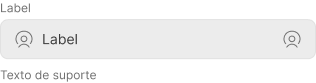
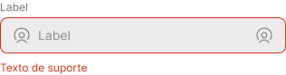

GESC: Efficient Field Service Management


Collecting information in a practical and intelligent manner
To ensure that a gas supply service poses no risk to customers, it is critical that the equipment consistently operates within safety technical standards. To achieve this, Comgás addresses thousands of maintenance and emergency incidents daily in the state of São Paulo.
The GESC was designed to streamline the work of hundreds of technicians in the challenging task of recording equipment information and procedures, as well as collecting photographic evidence for documenting the services performed during service calls.

My impact
How I contributed to this project
- UX Designer
- UI Designer
- Interaction Designer
- Content Designer
Duration
10 months
Deriverables
- Interactive prototypes
- Shadowing and interviews
- Persona
- Use cases, user journeys, and task flows
- Navigation map
- High and low-fidelity prototypes
- Design system/UI kit
- Usability testing and findings
Ferramentas
- Figma
- Miro
- Illustrator
- Photoshop
My role
For this project, I validated the client's presented needs, which initially involved designing an interface following a pre-established experience. Through understanding the context and conducting extensive research, I realized that the solution did not have the user at its core. I discovered various pain points and needs, as well as opportunities that would bring value to the business.
About the client
Comgás is the largest natural gas distributor in Latin America. Each day, nearly 700 service calls are addressed by approximately 250 technicians, performing maintenance on residential, commercial, and industrial gas installations, serving over 2.5 million customers. These customers receive piped gas through a network of over 21,000 km of pipelines spread across more than 95 cities in the State of São Paulo.
User statement (or the initial problem)
*If you don't have time, or if you find the text too long, just read the sections in bold for a quick understanding.
I always start from a statement of my target user's initial problem, defining who they are and what are their needs, , and I conduct a research to validate whether this is the real problem/need or not, and then I fill in the rest of that statement after having a deeper understanding of the context.
I am a maintenance technician for Comgás
And I need to record information and collect evidence of the maintenance performed in each service
But...
Because...
Which makes me feel…
Research: What I needed to understand and what I discovered
First, I talked to various stakeholders who had contact and understanding of what was involved in resolving field service calls to get an insight into the technicians' routine.
Every morning, the technician receives service orders (SOs) for the day on their smartphone through the customer service center. They organize a travel itinerary considering the deadline and the address of each call. Each service order contains details of the service to be performed, the address, and the deadline to reach the service location.
After driving to the location and performing the necessary procedures, the technician must upload photos and fill out various forms in different applications to close the service order and then move on to the next address.
With this initial information, I needed to delve deeper into the technicians' daily routines, gather details about the service, understand how the service orders were filled out, and uncover the problems and insights that would only become apparent by observing the process from their perspective, thus seeing what previous discussions had not highlighted.
Why create a new service order (SO) filling solution?
Does the filling process occur during, after the service, or both?
What requirements are not met by the existing applications?
What are the main experience and usability issues?
Shadowing: Going to the field and empathizing
For three days, I participated as an observer in various service order attendances, alongside different technicians, observing and asking questions about the processes and form fillings. In addition, I conducted in-depth interviews with 12 technicians and a quantitative survey with 40 technicians.


Findings and pain points
Initially, the need was to consolidate all the forms and functionalities that were scattered across 5 applications into a single solution. After gaining a better understanding of the workflow and the technicians' tasks, I realized that the problem went beyond having a single solution, and various other issues were causing inefficiency and loss of productivity.
Most common SOs
Common obstacles
Issues with the apps
Persona - Davi
38 years old. Technician at Comgás for 7 years, married, and with two children.
“My focus should be on resolving service calls for customers, but I end up spending more energy filling out the service orders”
Davi joined Comgás when SOs were still filled out by hand. He witnessed the transition from manual to digital forms with enthusiasm, but over time, gaps in the experience ended up making his job more challenging.
Personality


Technology


Think and feel
- Frustrated and insecure when filling out a service order
- Demotivated and impatient because of having to repeat the same work twice
- The system actually hinders more than it helps
Say and do
- Needs to anticipate and act expecting errors
- Does not follow protocols in order to be efficient
- The routing mode is inefficient
See
- Disorganized back office
- Leaders who cannot help
- Service orders arriving incorrect and/or incomplete
Hear
- That the system is no good
- That they need to finalize the service orders without wasting too much time
Pain points
- Bureaucratic filling
- Difficulty using the apps
- Very time-consuming work
- Demotivation
- Time spent on travel
Gains
- Time saving
- Working more efficiently
- Feeling motivated again
The apps do not reflect the real-world scenario, requiring separate notes and double effort. The app interface is also not intuitive: forms are tiring and do not provide progress visibility. Logistics are not organized based on real-time location of technicians, leading to long travel times.
User statement - the real problem
The entire research process helped me gain a clearer understanding of the needs and opportunities, enabling me to see what the real problem is to be addressed. With the information I collected, I could update and complete the user statement. In this case, two critical issues were chosen to be addressed:
I am a maintenance technician for Comgás
And I need to collect information about the services and maintenance performed
But I waste a lot of time filling out the work orders, which is slow and bureaucratic
Because to record the information, I need to interact with 5 different applications with complicated and unintuitive interfaces
Which makes me feel frustrated and demotivated because I can't perform my job efficiently and reach the goals
I am a maintenance technician for Comgás
And I needto travel quickly to the service locations
But I waste a lot of time in traffic
Because the service locations are very distant, and the distribution of work orders is not planned efficiently
Which makes me feel frustrated and demotivated because I can't perform my job efficiently and reach the goals
How might we create an application that allows technicians to dedicate time to their main task, which is the service to be provided, by assisting them in organizing their workday and filling out work orders in a simple and intuitive way?
Use scenario
The next step was to place the persona in a specific situation where they could use the product. The main use case was inspired by the synthesis of all the knowledge I gathered so far: conversations with stakeholders, interviews, and understanding the limitations of the tools used.
The MVP must allow the user to respond to a gas shutdown service call, collecting all the information and evidence needed, and enabling the customer to sign the service order at the end. Additionally, it should be quick to fill out, providing convenience and time saving.
Epic
As a GESC user, I need to access the platform to respond to service orders.User stories
As a GESC user, I need to know which service order is closest to my location. As a GESC user, I need to fill out all the information in the service order to close the call. As a GESC user, I need to collect photographic evidence and obtain the customer's signature.Acceptance criteria
Ensure that the GESC user can:- Complete the onboarding
- Get to know which is the next SO to be attended
- Access the service order to view the forms
- Fill out the forms in any order he chooses
- Have visibility of the completion progress
- Collect the customer's signature
1. New SO - Trigger
Davi is in his vehicle ready to start the service calls when he receives through the app a new gas shutdown service order.
2. Understanding the route
He accepts the service order, checks the distance and travel time, and then proceeds to the informed address.
3. Filling out the SO
During the service, he collects information and fills out the forms. At the end of the call, he fills the remaining information and collects the customer's signature, closing the service order.
4. Next service
While Davi was performing the service, the system calculated the estimated time it should take him to finish that call and, based on his location, assigned another service order to him. Davi accepts the new service order and starts a new service call.
Ideation
With my objective clear, I started thinking about the features. The application needs to be easy to use when answering a call. Whether filling out information or taking photos - easy access to forms with intuitive interactions that don't make the user think about filling out is necessary. The research process provided me with enough information to determine which features will bring more or less value to the user, and I counted on the help of the technology team to understand which of them will have greater or lesser impact on development stage.
Value
- Allow the user to choose what and when to fill out
- Separate forms by topic
- Present small tasks to be completed
- Progress bar indicating what has already been filled out and what is left
- Provide visibility of incorrectly/incompletely filled fields
- Intelligent and on-demand service order distribution system (drip feed), considering each technician's location and estimated time for completion of each type of service call
- Integration with Waze for travel to the service location
- Notify the customer via SMS/email when the technician is en route to perform the service
- Field masks and validations
- Educate the user with tips and filling examples
- Allow the user to temporarily pause the receipt of work orders
- Integration/partnership with parking lots to facilitate arrival at the service location
Task flows
After defining the features, I created a flow for the main tasks.User flow
The user initiates the application to receive service orders and respond to calls. This flow assumes that the user is using the application for the first time.
Navigation map
Based on the task flows and features, I created a simple navigation map that is functional and easy to navigate.
Prototypes: test and iterate quickly
Wireframe
The first version of the wireframe allowed me to explore common design patterns among well-known applications, helping me determine what would bring familiarity during users' interaction with GESC. I also conducted initial usability tests to better understand how users expected to complete the tasks I was focusing on and discover the priority revisions that need to be implemented, reducing the number of iterations and focusing efforts on creating the high-fidelity interface.

UI Kit
I developed a UI Kit based on Google Material Design, incorporating visual attributes from the Comgás brand.Color palette

Alert palette


Grayscale palette


Componentization
Primary buttons


Secondary buttons


Text buttons


Basic text field

Selected text field
Error text field
Disabled Text field

High-fidelity prototype and usability tests
see the full hi-fi prototype

Test results
I tested the first version of the prototype with 5 users to determine the necessary revisions to make the experience more intuitive and enjoyable. Here are some data and results:
Iteration
Main pain points addressed in the iteration:
- Enable the user to copy the address for navigation through his preferred app;
- Add a bottom navigation bar so that the user understands the completion status of each form;
- UX writing corrections to align communication with terms that users are familiar to.
GESC in the real world
After implementing the application, we were able to collect some interesting data from the technicians' use during service calls:
What I learned and next steps
- The initial approach was for GESC to unify tools scattered across various apps to compose a single application. However, I realized that it was necessary to identify and standardize the various types of services that it would need to perform and design GESC to meet and reflect the reality of what happens during a real service call.
- Reducing the user's workload and mental burden is a important goal, but it is necessary to ensure that the user still has autonomy to make decisions and fill out the forms in the way they prefer.
- It is important for the system to communicate with the user in a familiar way, incorporating technical terms and slangs they are already familiar with.
GESC can provide an even better experience to gas technicians, and here are some ideas I suggested:
- Show the recent history of previous service calls, with pre-populated fields to speed up the filling out process even more;
- Integration with customer support to schedule technical visits and notifications via text messages on the day of service providing the technician's estimated arrival time.
back to the top